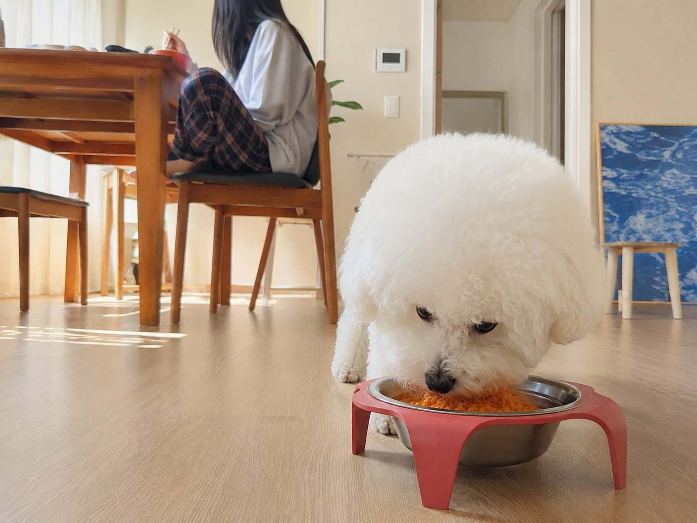

Food, design, everyday life, and Cloud. No particular theme — just things I actually care about.

A Korean-American dog owner's honest review of Pupsday — the Korean treat subscription box I didn't know I needed.